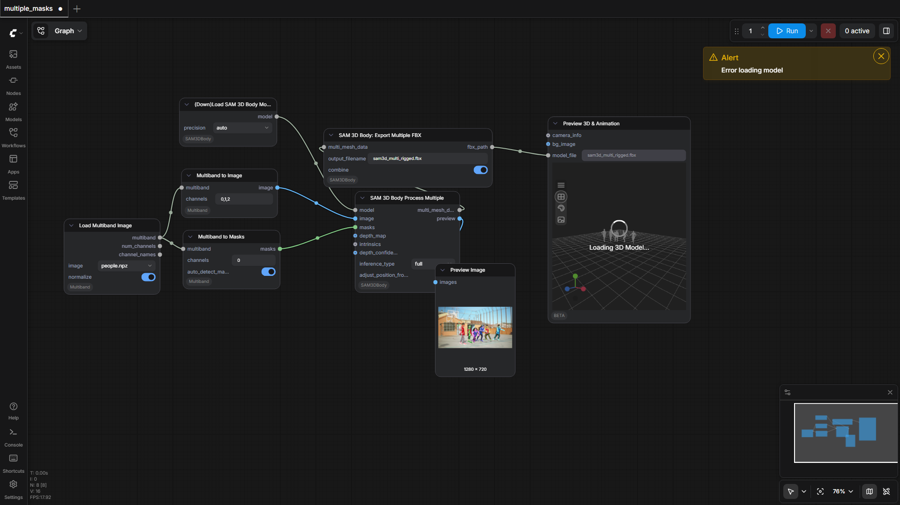
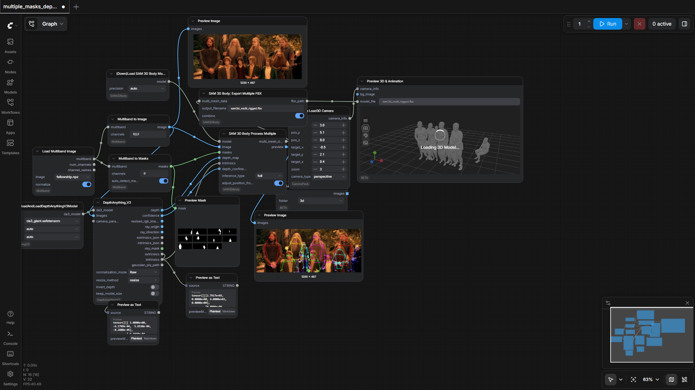
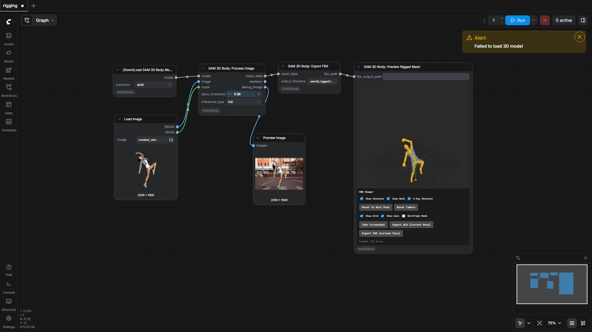
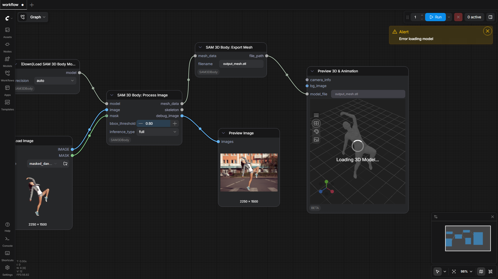

PozzettiAndrea/ComfyUI-SAM3DBody
Test Results
2026-05-10 16:55 UTC
Windows-11-10.0.26200-SP0
Intel64 Family 6 Model 79 Stepping 1, GenuineIntel
100.0%
4 passed
4/4 tests
Workflows
Grid
List

multiple_masks
pass
161.05s

multiple_masks_depthcorrected
pass
226.36s

rigging
pass
48.96s

workflow
pass
79.77s
Downloaded Models
14 files · 7.7 GB
models/depthanything3/
5.1 GB
da3_giant.safetensors
5.1 GB
.cache\huggingface\CACHEDIR.TAG
195.0 B
.cache\huggingface\download\model.safetensors.metadata
128.0 B
.cache\huggingface\.gitignore
1.0 B
models/sam3dbody/
2.6 GB
model.safetensors
2.0 GB
assets\mhr_model.pt
663.9 MB
.gitattributes
1.5 KB
model_config.yaml
1.5 KB
.cache\huggingface\CACHEDIR.TAG
195.0 B
.cache\huggingface\download\assets\mhr_model.pt.metadata
128.0 B
.cache\huggingface\download\model.safetensors.metadata
127.0 B
.cache\huggingface\download\.gitattributes.metadata
103.0 B
.cache\huggingface\download\model_config.yaml.metadata
103.0 B
.cache\huggingface\.gitignore
1.0 B
×
‹
›
0.0s / 0.0s
Resource Usage
RAM (GB)
VRAM (GB)